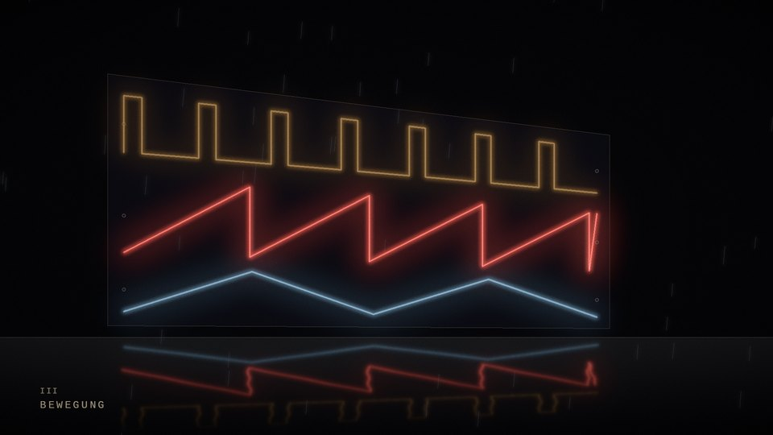
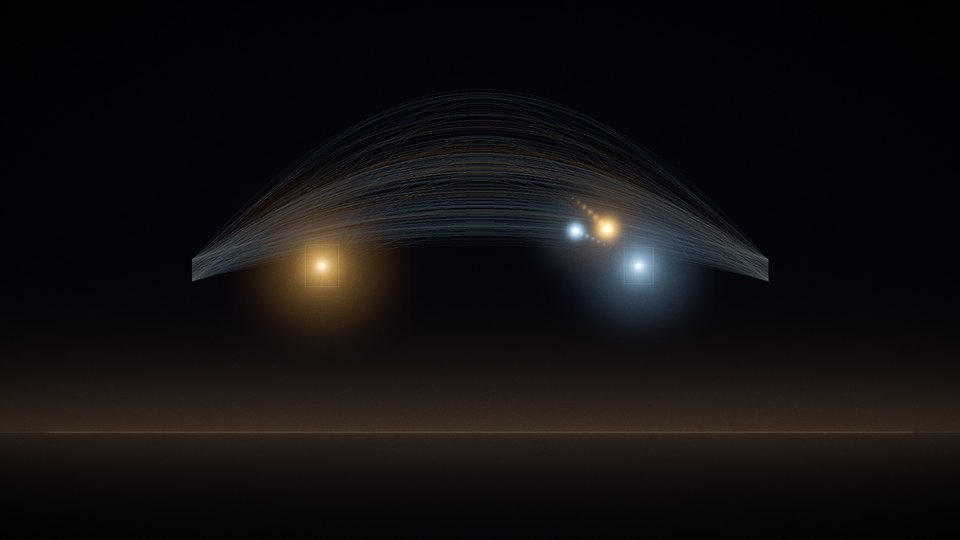
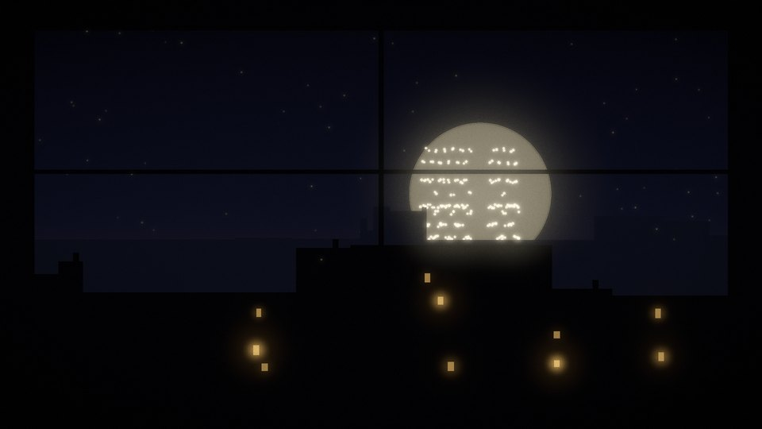
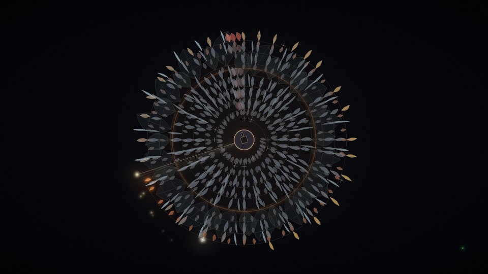
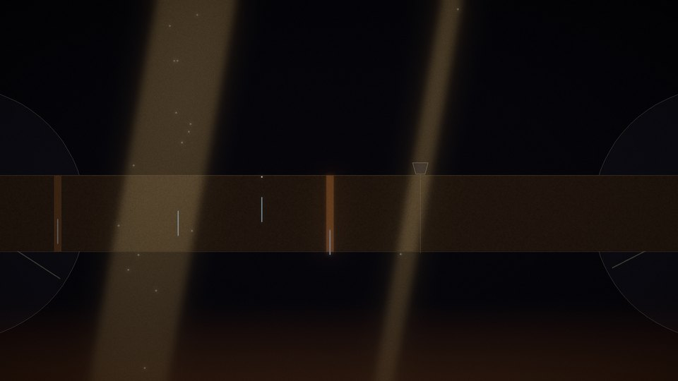
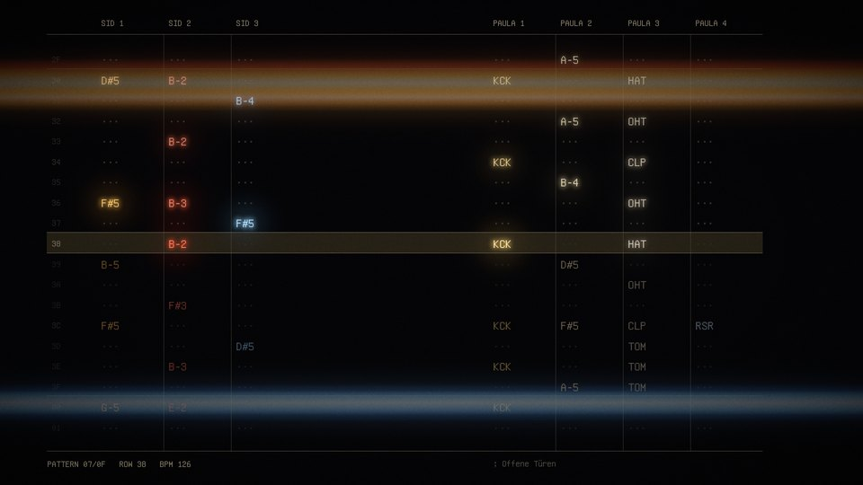
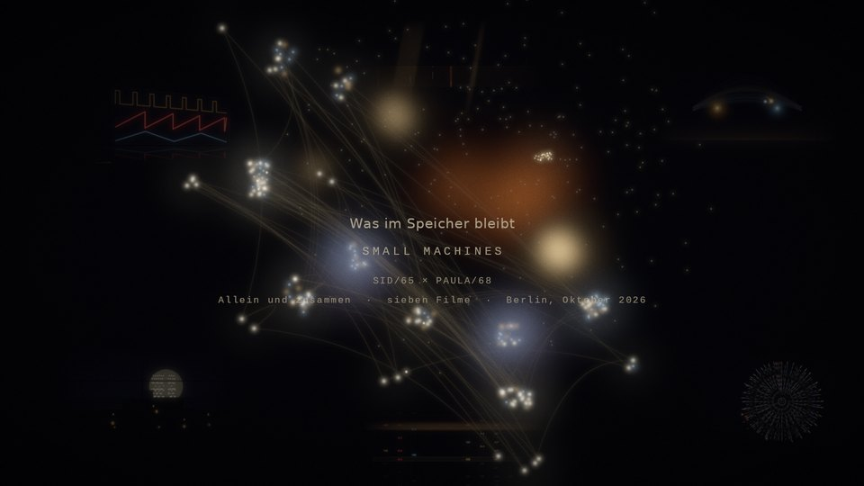

Filme / Allein und zusammen
Die Partitur
wird zum Bild.
Sieben Filme für die sieben Stücke von Allein und zusammen. Jede Note, jedes Sample, jede
Hüllkurve und jeder Abschnitt hinterlassen genau auf dem Sechzehntel eine Spur im Bild, auf dem sie
in der Partitur stehen. So ergibt dieselbe Partitur immer denselben Film. SID zeichnet mit Linien und Licht.
Paula nimmt Gestalt an, als Blütenblatt, Loch im Papier oder Spur auf dem Tonband. Jeder Player lädt erst beim Anklicken.
I – II · SID/65 alleinDrei synthetische Stimmen, von einer Musikroutine für den 6502 gesteuert. Linien und Licht.
i / drei stimmen im neon
SID/65 · 2:17

Film laden
von youtube-nocookie.com · erst beim Anklicken
SID/65 · SM001 “Drei Stimmen, eine Stadt” · Titel 2 · 118 BPM · a-Moll
Drei Stimmen im Neon
Drei Neonröhren an einer regennassen Straße. Jede ist in die Wellenform ihrer Stimme gebogen. Die Melodie pulsiert, der Bass hat Sägezähne, das Schlagzeug besteht aus Rauschen und Dreieckswellen. Mit jeder Note wechselt die Zahl der Wellen in der Röhre. Sie flackert kurz auf und leuchtet so hell, wie es die Hüllkurve des Chips zulässt. Auf der nassen Straße spiegeln sich die drei Stimmen.
- 0:00Einschalten
- 0:16Neon
- 0:49Bewegung
- 1:05Leere Straße
- 1:21Rückkehr
- 1:54Letztes Licht
ii / ein bit von dir
SID/65 · 2:31

Film laden
von youtube-nocookie.com · erst beim Anklicken
SID/65 · SM001 “Drei Stimmen, eine Stadt” · Titel 4 · 80 BPM · h-Moll / D-Dur
Ein Bit von dir
Zwei Lichter, weit voneinander entfernt. Die Dreiecksstimme schickt jede Note als Bit in einem Bogen hinüber. Je höher der Ton, desto höher der Bogen. Von rechts antwortet die Pulsstimme. Der gehaltene Basston bildet den Horizont. Jeder Flug hinterlässt eine Spur. Mit der Zeit webt sich daraus eine Brücke. In „Nähe“ rücken die Lichter zusammen. Der Zwischenraum bleibt offen.
- 0:00Ein erster Ton
- 0:24Nachricht
- 1:00Antwort
- 1:36Nähe
- 2:00Bleibt offen
III – IV · PAULA/68 alleinVier Samplekanäle und ein begrenzter 68000-Musikkern. Ein Blütenblatt, ein Loch im Papier.
iii / papiermond
PAULA/68 · 2:30

Film laden
von youtube-nocookie.com · erst beim Anklicken
PAULA/68 · SM002 “Diskettenblumen” · Titel 4 · 94 BPM · f-Moll
Papiermond
Ein Diorama aus Scherenschnitten. Jeder Ton des E-Pianos stanzt ein Loch in den Mond. Mit der Zeit wandern die Löcher von links nach rechts, ihre Höhe folgt der Tonhöhe. So wächst der Mond mit jeder Note. Die gezupften Antworten lassen in den Dächern Fenster aufleuchten. Der Subbass lässt das Licht hinter dem Papier atmen, die Bassdrum erschüttert die Schichten, der Shaker verstreut Papierstaub. In „Schwerelos“ steigen gläserne Kreise auf. Bei „Gute Nacht“ schließen sich die Vorhänge.
- 0:00Papierlicht
- 0:20Mondbahn
- 1:01Schwerelos
- 1:22Wieder am Fenster
- 2:03Gute Nacht
iv / diskettenblumen
PAULA/68 · 2:03

Film laden
von youtube-nocookie.com · erst beim Anklicken
PAULA/68 · SM002 “Diskettenblumen” · Titel 2 · 132 BPM · c-Moll
Diskettenblumen
Die Zeit dreht sich im Kreis. Acht Takte ergeben eine Umdrehung, der Radius wächst mit dem Stück. Jedes Sample wird dort zum Blütenblatt, wo gerade der Lesekopf steht. Der Bass biegt sich als Kelch nach innen, die Marimba glänzt golden, Glas wird zu Eis, die Toms glimmen. Die Hi-Hats verstreuen Pollen, die Claps setzen helle Striche. Dazwischen wachsen Tastenklänge und Flächen zu breiten Blättern. Was sich in der Musik wiederholt, erscheint in der Blüte als Symmetrie. Am Ende wird die Diskette ausgeworfen. Ein Nachbild bleibt.
- 0:00Laufwerk
- 0:15Blüten
- 0:44Alles offen
- 0:58Zwischenraum
- 1:13Noch einmal Sommer
- 1:42Auswerfen
V – VII · zusammenSID und Paula teilen sich einen Sampletakt. Fensterlicht und Tonband, Frage und Antwort.
v / fensterlicht auf magnetband
SID/65 × PAULA/68 · 2:54

Film laden
von youtube-nocookie.com · erst beim Anklicken
SID/65 × PAULA/68 · SM003 “Wo die Maschinen sich treffen” · Titel 2 · 92 BPM · d-Moll
Fensterlicht auf Magnetband
Ein Band läuft zwischen zwei Spulen durchs Bild. Am Aufnahmekopf schreibt Paula ihre Samples aufs Band. Die Bassdrum hinterlässt Balken, die Tasten zeichnen Striche auf Höhe ihrer Töne, Glas zieht helle Linien. Die Snare hinterlässt Kratzer, der Shaker Staub. Die Spuren wandern nach links aus dem Bild. SID ist das Fensterlicht. Die langen Dreieckstöne bilden breite Strahlen. Die Pulsmelodie ist ein schmaler Streifen, der sich mit der Tonhöhe bewegt. Der Bass leuchtet auf dem Boden. In „Band läuft aus“ zieht das Bandende am Tonkopf vorbei.
- 0:00Fenster auf
- 0:21Erster Gedanke
- 1:03Licht fällt ein
- 1:23Schwebender Mittelteil
- 1:44Wiederkehr
- 2:26Band läuft aus
vi / zwischen zwei takten
SID/65 × PAULA/68 · 2:09

Film laden
von youtube-nocookie.com · erst beim Anklicken
SID/65 × PAULA/68 · SM003 “Wo die Maschinen sich treffen” · Titel 3 · 126 BPM · e-Moll
Zwischen zwei Takten
Ein Tracker-Bildschirm mit sieben Spalten. Drei gehören den SID-Stimmen, vier den Paula-Kanälen. Auf jede Sechzehntel fällt eine Zeile. 64 Zeilen ergeben ein Pattern, 16 Patterns das Stück. Links steht die Frage, rechts die Antwort. Der Cursor bleibt in der Mitte, während die Partitur durch ihn hindurchläuft. Unten lässt sich schon schwach erkennen, was kommt. Dahinter leuchten Copper-Balken zum Schlag der Bassdrum auf. Bei „Offene Türen“ rücken die Hälften auseinander. In „Halbe Geschwindigkeit“ werden die Zeilen höher und ziehen langsamer vorbei.
- 0:00Kontakt
- 0:15Frage und Antwort
- 0:46Offene Türen
- 1:01Halbe Geschwindigkeit
- 1:16Zweiter Anlauf
- 1:47Letzter Zug
vii / was im speicher bleibt
SID/65 × PAULA/68 · 2:47

Film laden
von youtube-nocookie.com · erst beim Anklicken
SID/65 × PAULA/68 · SM003 “Wo die Maschinen sich treffen” · Titel 6 · 72 BPM · fis-Moll / A-Dur
Was im Speicher bleibt
Ein dunkles Feld, in dem jeder Klang einen glimmenden Punkt hinterlässt. Die Tonhöhe bestimmt seinen Ort. Der Tonname gibt die Richtung im Quintenzirkel an, die Oktave den Abstand von der Mitte. Jede Tonart erhält so ihren Himmelsausschnitt. Bei jeder Wiederholung leuchtet er heller. Die SID-Melodie zieht wie auf einer Sternkarte Linien von Ton zu Ton. Die Kamera fährt zurück, bis ein ganzes Sternbild sichtbar wird. Schwach tauchen Nachbilder der anderen sechs Filme auf. Der letzte Akkord bleibt.
- 0:00Ein Rest von Licht
- 0:27Erinnerung
- 1:07Nähe
- 1:47Alles wird weit
- 2:13Bleibt